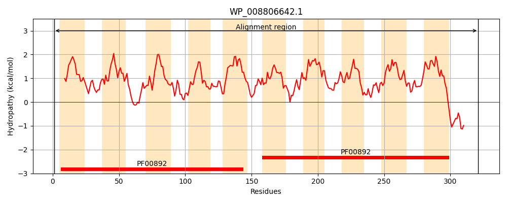
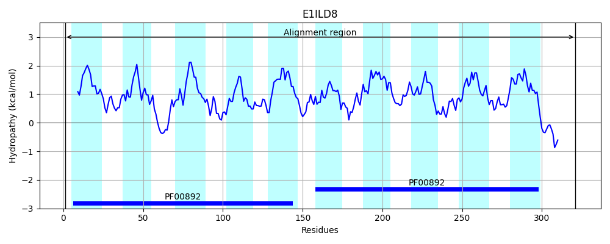
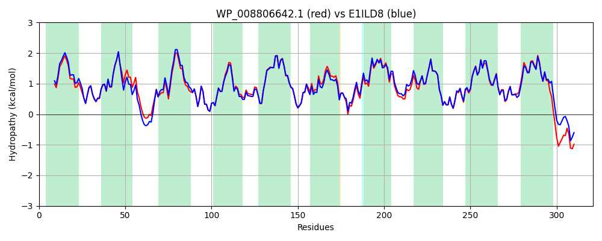

Hit Accession: E1ILD8
Hit TCID: 2.A.7.3.18
Hit Description: gnl|BL_ORD_ID|3586 gnl|TC-DB|E1ILD8|2.A.7.3.18 Integral membrane protein DUF6 OS=Escherichia coli MS 145-7 GN=HMPREF9348_00928 PE=4 SV=1
Mach Len: 321
e:0.000000
Query TMS Count : 10
Hit TMS Count: 10
TMS-Overlap Score: 9.500000
Predicted Substrates:None
BLAST Alignment:
Score: 1479 , Bit scores: 574 bits, E-value: 0.0e+00, Alignment length: 321, Percentage identity: 89
Query: 1 MKQQAGIGIILALTTAMCWGALPIAMKQVLEVMEPPTVVFYRFLMASIGLGAILAIKGKLPPLRIFRKPRWLVLLAIATGGLFGNFILFSSSLQYLSPTASQVIGQLSPVGMMVASVVILKERMRGTQVVGALMLLSGLVMFFNTSLIEIFTRLTDYTWGVIFGVAAATVWVSYGVAQKVLLRRLASQQILFLLYTLCTIALLPLAKPGVISQLSDWQLACLIFCGLNTLVGYGALAEAMARWQAAQVSALITLTPLFTLLFSDLLSMAWPDVFARPMLNLIGYLGAFVVVAGAMYSAIGHRLWGRWRKREAVVPLPRSGE 321
MKQQAGIGI+LALTTA+CWGALPIAMKQVLEVMEPPT+VFYRFLMASIGLGAILA+K +LPPLR+FRKPRWL+LLA+AT GLFGNFILFSSSLQYLSPTASQVIGQLSPVGMMVASV ILKE+MR TQVVGALMLLSGLVMFFNTSL+EIFT+LTDYTWGVIFGV AATVWVSYGVAQKVLLRRLAS QILFLLYTLCTIAL PLAKPGVI+QLS WQLACLIFCGLNTLVGYGALAEAMARWQAAQVSA+ITLTPLFTL FSDLLS+AWPD FARPMLNL+GYLGAFVVVAGAMYSAIGHR+WG RK VV PR+GE
Sbjct: 1 MKQQAGIGILLALTTAICWGALPIAMKQVLEVMEPPTIVFYRFLMASIGLGAILAVKKRLPPLRVFRKPRWLILLAVATAGLFGNFILFSSSLQYLSPTASQVIGQLSPVGMMVASVFILKEKMRSTQVVGALMLLSGLVMFFNTSLVEIFTKLTDYTWGVIFGVGAATVWVSYGVAQKVLLRRLASPQILFLLYTLCTIALFPLAKPGVIAQLSHWQLACLIFCGLNTLVGYGALAEAMARWQAAQVSAIITLTPLFTLFFSDLLSLAWPDFFARPMLNLLGYLGAFVVVAGAMYSAIGHRIWGGLRKHTTVVSQPRAGE 321 | Protein Hydropathy Plots: |
|---|
|  |  |
Pairwise Alignment-Hydropathy Plot:
|
|---|
|  |